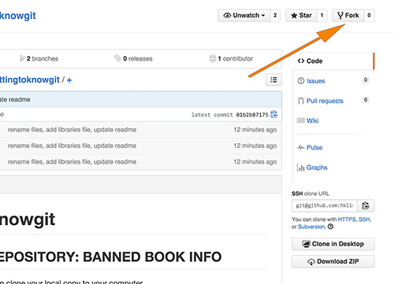
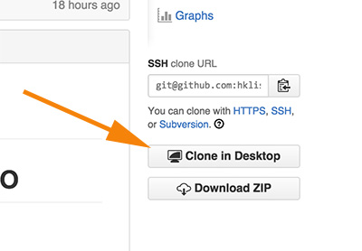

- Install A Git GUI and sign into your GitHub Account
- Practice with Git and GitHub
Install a Git GUI Tool
Mac
If you're on a mac and want to work on a GUI, you'll have several options (see a git GUIs for mac on the official git site), but to get you started, the GitHub GUI client is quick and easy, and works for the purpose of this class.
To install the GitHub Mac GUI, download the GUI from the GitHub site. Once you open up the tool, it will ask for your GitHub user name and password. It's pretty self-explanatory, but you can look to the help guide for more instructions if needed.
PC
There are several Windows-based GUIs available if you use a PC. For the purpose of this class, you might want to start with the GitHub for Windows GUI. Before you download the GUI, you might want to register for a GitHub account.
To install GitHub for Windows, download the GitHub for Windows program. Once you run the installation, the program will ask for your GitHub username and password. Read the GitHub for Windows Help guide for more instructions if needed.
Practice Git
Fork & clone a repository
Visit GitHub and fork our repository at https://github.com/hklish01/gettingtoknowgit. You can of course clone whatever repository you'd like, but for the purpose of this practice, go ahead and fork ours.

Go to the forked copy of the repository, and hit the "Clone in Desktop" button.

Your computer may ask you which application to open this with. Choose the GitHub application.
The GitHub application will save this repository to your computer - you may choose the location or go with the defaults. The GitHub application will show you any changes you've made (since you've just cloned the repository, you'll see none), and the history from previous commits from before you forked the repository.
Also - note the branches button. Here there will be two branches - master and gh-pages. For this exercise, use master. The gh-pages branch is the one we used to host this web page you're reading.
Make a change to your repository
You won't do any work on the actual files within the GitHub application. So navigate, via the finder or "my computer", to the repository. (If you accepted the default location, this could be your computer's default document folder).
Make a change to a file - Make any of the proposed additions below:
- Add information about banned books to the banned_book.txt file.
- Add a banned book to this same file.
- Add a library name and link to the libraries_info.txt file
- Add a file with a different type of information about banned books (perhaps a list of banned book events?)
- Add and commit your changes, then push them back to your repository on GitHub. Issue a pull request to the original repository.
Commit your changes
Make sure the change(s) you have made to the files in the repository have been saved to your computer. Go back to the GitHub application and you should see the changes you've made. Add a note in the "summary" field and hit the "Commit to master" button. Now when you go to the "History" view you'll see your commit in addition to the first commits we made before you forked the repository.
To push your changes to your repository on GitHub, hit the sync button (top right side). When you go to GitHub through your browser, you'll now see the changes you made on your local computer
What else?
You now know some basics of working with git! It'll be easier to learn from here. You may want to practice with branches and merging. See our resources page for further tutorials and help.